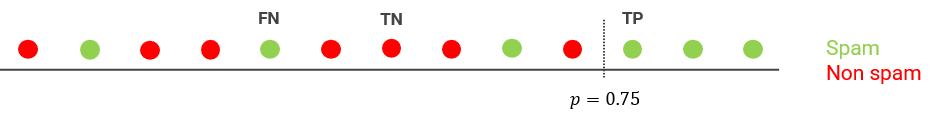

18 - Metriche¶
Abbiamo visto come la regressione logistca restituisca una probabilità, che grazie alla classe LogisticRegression() viene automaticamente convertita in un valore relativo ad una classe.
Torniamo al nostro spam detector. Un modello di regressione logistica che restituisca una probabilità \(p = 0.999\) ci sta dicendo che, molto probabilmente, questo è di spam; di converso, se il modello restituisce \(p = 0.003\) allora è molto probabile che il messaggio non sia spam. Cosa accade però nel caso in cui \(p = 0.505\)?
18.1 - Soglia di decisione¶
L'esempio precedente ci fa comprendere come per passare da una probabilità ad una classe sia necessario definire una soglia di decisione: un valore oltre questa soglia indicherà, ad esempio, che la mail ricevuta è di spam, mentre uno al di sotto della soglia ci suggerirà che non lo è.
Ovviamente, la tentazione potrebbe essere quella di presupporre che la soglia di decisione sia sempre pari a \(0.5\): questo, ovviamente, non è vero, in quanto la soglia dipende dal problema, ed è un valore che bisogna stabilire in base al problema affrontato. Introduciamo alcune metriche che possono essere usate in tal senso.
18.2 - Metriche per i classificatori¶
Continuiamo a concentrarci sul caso della classificazione dello spam, ed introduciamo il concetto di classe positiva e classe negativa.
In particolare, la classe positiva sarà rappresentata da tutte le mail di spam, mentre la classe negativa sarà rappresentata dalle mail non spam. In tal senso, le predizioni del modello potranno essere di quattro tipi:
- nel primo caso, il modello classificherà correttamente una mail di spam. In questo caso, si parla di vero positivo, o true positive (TP);
- nel secondo caso, il modello classificherà correttamente una mail legittima. In questo caso, si parla di vero negativo, o true negative (TN);
- nel terzo caso, il modello classificherà una mail di spam come legittima. In questo caso, si parla di falso negativo, o false negative (FN);
- nel quarto caso, il modello classificherà una mail legittima come di spam. In questo caso, si parla di falso positivo, o false positive (FP).
In pratica, un TP (TN) si ha quando il modello predice correttamente la classe positiva (negativa), mentre un FP (FN) si ha quando il modello predice in maniera non corretta la classe positiva (negativa).
18.2.1 - Accuratezza¶
L'accuratezza è la prima metrica che vedremo per la valutazione dei modelli di classificazione. Informalmente, possiamo definirla come la percentuale di predizioni corrette effettuate dal nostro modello, e definirla come:
dove \(C\) è il numero totale di predizioni corrette, mentre \(T\) è il numero totale di predizioni. Nel caso della classificazione binaria, possiamo calcolare l'accuratezza come segue:
Immaginiamo ad esempio di aver ricevuto \(100\) email, tra cui \(10\) di spam. Il nostro spam detector ha individuato correttamente \(5\) messaggi di spam, e classificato per sbaglio come spam \(5\) messaggi legittimi. Allora:
In questo caso, l'accuratezza del modello è pari a \(0.90\), o del \(90\%\), il che significa che il nostro modello è in grado di fare \(90\) predizioni su \(100\). Buon risultato, giusto?
In realtà, non necessariamente. Infatti, delle mail che abbiamo ricevuto, \(90\) sono legittime, e \(10\) di spam. Questo significa che il modello è stato in grado di individuare soltanto il \(50\%\) dello spam ricevuto, ed ha inoltre classificato un buon \(7\%\) delle email legittime come spam. Tra cui, prevedibilmente, quella che ci comunicava notizie di vitale importanza. In sostanza, il nostro modello ha un'efficacia "vera e propria" al più in un caso su due.
Di conseguenza, l'accuratezza non ci racconta "tutta la storia" quando lavoriamo su un dataset sbilanciato come questo, dove vi è una disparità significativa tra la classe positiva e quella negativa.
18.2.1.1 - Accuratezza in Scikit Learn¶
L'accuratezza delle predizioni effettuate da un classificatore è ottenuta in Scikit Learn utilizzando il metodo accuracy_score().
Ad esempio:
from sklearn.metrics import accuracy_score
clf = LogisticRegression(max_iter=1000)
clf.fit(X_train, y_train)
y_pred = clf.predict(X_test)
accuracy_score(y_test, y_pred)
18.2.2 - La precisione¶
La precisione è una metrica che prova a risolvere alcuni dei problemi dell'accuratezza valutando quale sia la proporzione di valori per la classe positiva identificati correttamente.
La definizione analitica della precisione è la seguente:
In pratica, riferendoci al nostro solito esempio, la precisione è data dal rapporto tra le mail di spam riconosciute come tali e la somma tra queste e le mail legittime riconosciute come spam. Provando a calcolarla:
Il modello ha quindi una precisione del \(50\%\) nel riconoscere una mail di spam.
18.2.2.1 - Precisione in Scikit Learn¶
La precisione delle predizioni effettuate da un classificatore è ottenuta in Scikit Learn utilizzando il metodo precision_score().
Ad esempio:
18.2.3 - Il recall¶
Il recall, traducibile in italiano come richiamo, verifica la porzione di veri positivi correttamente identificata dall'algoritmo, ed è espresso come:
Nel nostro caso, il recall sarà quindi dato dal rapporto tra le mail correttamente indicate come spam e la somma tra le stesse e quelle erroneamente indicate come legittime. Va da sè che anche in questo caso possiamo calcolarlo:
Così come la precisione, il recall è pari a \(0.5\), ovvero è del \(50\%\).
18.2.3.1 - Recall in Scikit Learn¶
Ovviamente, anche il recall ha una rappresentazione in Scikit Learn mediante la funzione recall_score():
18.3 - Tuning della soglia di decisione¶
Per valutare l'effiacia del modello dobbiamo esaminare congiuntamente la precisione ed il recall. Sfortunatamente, questi due valori sono spesso in contrapposizione: spesso, infatti, migliorare la precisione riduce il recall, e viceversa. Per comprendere empiricamente questo concetto, facciamo un esempio con il nostro spam detector, immaginando di aver impostato la soglia di decisione a \(0.6\). I risultati sono mostrati nella figura successiva.

Calcoliamo la precisione e il recall in questo caso:
Proviamo ad aumentare la soglia di decisione, portandola al \(75\%\).

Proviamo infine a diminuire la soglia di decisione, portandola al \(50%\).

Come possiamo vedere, la soglia di detection agisce su precisione e recall; non è però possibile aumentarli contemporaneamente, per cui occorre scegliere un valore tale per cui, ad esempio, si massimizzi la media. La realtà è che, però, dipende sempre dall'applicazione: se non abbiamo paura di perdere mail legittime, allora possiamo abbassare la soglia di decisione, aumentando il recall; viceversa, se siamo disposti ad eliminare manualmente un po' di spam, potremo alzare la soglia di decisione, aumentando la precisione.
18.4 - Metriche per i regressori¶
Definiamo brevemente alcune delle metriche che è possibile utilizzare per la valutazione delle performance di un modello di regressione.
18.4.1 - Mean Squared Error (MSE)¶
Abbiamo già visto questa metrica quando abbiamo parlato della regressione. L'errore quadratico medio è definito come:
Questo errore, implementato in Scikit Learn dalla funzione mean_squared_error(), permette di tenere conto di eventuali errori negativi e positivi, ma viene influenzato dalla grandezza assoluta delle variabili. In altre parole, un errore dell'\(1\%\) su un valore \(y=100\) sarà più influente di un errore del \(50\%\) su un valore \(y=1\).
Ovviamente, tanto è minore l'MSE, tanto è migliore il modello considerato.
18.4.2 - Mean Absolute Percentage Error (MAPE)¶
Il mean absolute percentage error viene calcolato mediante il rapporto tra il valore assoluto della differenza tra i valori veri e quelli predetti dal regressore e i valori veri stessi. Tale rapporto viene quindi mediato sull'insieme dei campioni, e ne viene dedotta la percentuale. La formula è la seguente:
Il MAPE è implementato in Scikit Learn mediante la funzione mean_average_percentage_error().
Il vantaggio principale derivante dall'uso del MAPE sta nel fatto che l'uso del valore assoluto elimina eventuali annullamenti derivanti da contributi di segno opposto. Inoltre, la presenza del valore vero a denominatore fa in modo che la metrica sia sensibile agli errori relativi.
Anche in questo caso, un valore di MAPE basso indica un'ottima approssimazione.
18.4.3 - \(R^2\) e varianza spiegata¶
Il valore \(R^2\) determina la proporzione della varianza del valore vero che viene spiegata dal modello. In pratica, ci permette di definire quanta della variabilità del fenomeno (ovvero, del modo in cui il fenomeno combina le \(n\) variabili indipendenti per ottenere le \(m\) variabili dipendenti) viene correttamente caratterizzata attraverso il modello considerato.
Il valore di \(R^2\) può oscillare tra \(1\) e \(- \infty\), ovvero tra la modellazione completa dell'intera variabilità del fenomeno ed un modello totalmente incorrelato allo stesso.
Il valore di \(R^2\) è definito come:
con:
Il valore \(R^2\) è modellato in Scikit Learn mediante la funzione r2_score(), ed in alcuni casi è anche presente come metodo all'interno degli stimatori stessi.